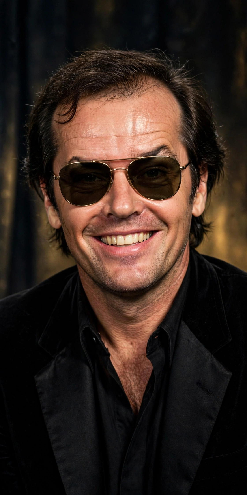

American actor and filmmaker (born 1937)
| Jack Nicholson | |
|---|---|
 Nicholson, one of the most decorated actors in film history | |
| Born | John Joseph Nicholson, 22 April 1937, Neptune City, New Jersey, U.S. |
| Occupation | Actor, filmmaker |
| Years active | 1955–2010 |
| Awards | 3 Academy Awards; 12 Academy Award nominations (most for a male actor) |
John Joseph Nicholson (born 22 April 1937) is an American retired actor and filmmaker. He is widely regarded as one of the greatest actors of the 20th century, noted for portraying complex, rebellious, and often neurotic characters in a career spanning more than five decades. Nicholson received a record twelve Academy Award nominations for acting, winning three times.
Nicholson was born in Neptune City, New Jersey, and raised in Neptune City and Spring Lake by his grandparents, whom he believed to be his parents; the woman he believed to be his older sister, June, was in fact his mother — a fact he learned only in 1974, after both had died. He moved to Los Angeles at seventeen and worked in the animation department at MGM.
After early work in low-budget films for Roger Corman, including The Little Shop of Horrors (1960), Nicholson's breakthrough came with Easy Rider (1969), which earned him his first Oscar nomination. He became a defining star of the New Hollywood era with Five Easy Pieces (1970), The Last Detail (1973), and Roman Polanski's Chinatown (1974).
He won the Academy Award for Best Actor for One Flew Over the Cuckoo's Nest (1975), playing Randle McMurphy, and again for As Good as It Gets (1997); he won Best Supporting Actor for Terms of Endearment (1983). Other celebrated roles include Jack Torrance in Stanley Kubrick's The Shining (1980), the Joker in Tim Burton's Batman (1989), and Frank Costello in Martin Scorsese's The Departed (2006). His famous courtroom scene in A Few Good Men (1992) produced the line "You can't handle the truth!"
Nicholson is one of only three male actors to win three Academy Awards for acting and one of only two actors nominated for an Oscar in every decade from the 1960s to the 2000s. Known for his distinctive grin, sunglasses, and courtside seat at Los Angeles Lakers games, he effectively retired from acting after How Do You Know (2010).